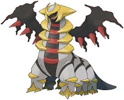

Giratina

Giratina adalah Pokémon naga besar berwarna abu-abu dengan tiga setengah lingkaran emas di setiap sisi lehernya yang panjang. Kepalanya memiliki benda seperti mahkota emas yang mengelilinginya dengan dua tanduk besar yang mengarah ke samping. Garis hitam tebal membentang vertikal di sepanjang bagian depannya dengan lima garis horizontal merah. Dalam Bentuk Altered-nya, ia memiliki dua sayap hantu hitam besar dengan tiga ujung merah di masing-masing sayap yang dapat menyerupai cakar. Sayap-sayap ini dapat berubah bentuk seolah-olah terbuat dari cairan atau gas. Keenam kakinya tebal dan memiliki cakar emas. Dua setengah lingkaran emas yang mirip dengan yang ada di lehernya terdapat di setiap sisi setiap kaki, menyerupai belenggu. Ia memiliki ekor dengan dua tanda seperti pita.